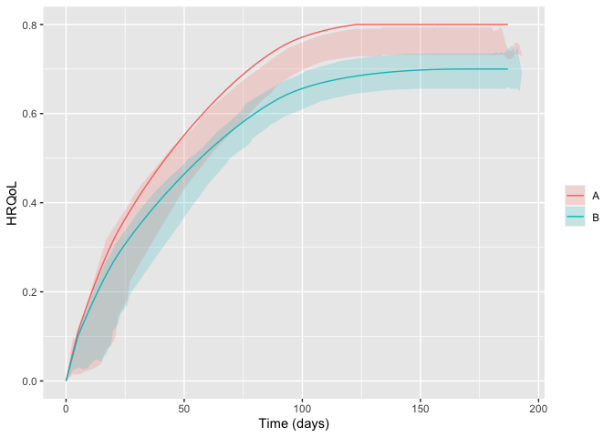

Package for simulating two-arm randomised clinical trials with temporal trajectories of health-related quality of life (HRQoL) as the outcome and quantifies effect sizes as single-sampled HRQoL values at end of follow-up and as the area under the trajectories.
Developed as part of the INCEPT (Intensive Care Platform Trial) project (https://incept.dk/), which is primarily supported by a grant from Sygeforsikringen “danmark” (https://www.sygeforsikring.dk/).
Resources
- Website - stand-alone website with full package documentation
-
Health-related quality of life trajectories in critical illness: protocol for a Monte Carlo simulation study - article in Acta Anaesthesiologica Scandinavica outlining the first scientific study to use
hrqolr
Installation
hrqolr isn’t on CRAN yet but can be installed from GitHub if you have the remotes package installed:
# install.packages("remotes")
remotes::install_github("INCEPTdk/hrqolr")You can also install the development version from directly from GitHub. Doing this requires the remotes-package installed. The development version may contain additional features not yet available in the stable CRAN version, but may be unstable or lack documentation.
remotes::install_github("INCEPTdk/hrqolr@dev")Example
First, load the package:
library(hrqolr)
#> Loading 'hrqolr' package v0.0.9000.
#> For help, run 'help("hrqolr")' or check out https://inceptdk.github.io/hrqolr/.
#> Consider running 'cache_hrqolr()' for faster simulations. If you have enough RAM, increasing the cache size might speed up things even more;
#> run '?cache_hrqolr' for details.–then, we activate the cache. This is optional but highly recommended.
hrqolr was built to simulate many scenarios, but here we define a single scenario and use do.call to give the list elements as named arguments to the function:
scenario <- list(
n_trials = 100L,
n_patients_per_arm = 100L,
sampling_frequency = 14L,
n_patients_ground_truth = 1000L,
n_example_trajectories_per_arm = 100L,
arms = c("A", "B"),
index_hrqol = c(A = 0.0, B = 0.0),
first_hrqol = c(A = 0.1, B = 0.1),
final_hrqol = c(A = 0.8, B = 0.7),
acceleration_hrqol = c(A = 0.1, B = 0.0),
mortality = c(A = 0.4, B = 0.4),
mortality_dampening = c(A = 0.0, B = 0.0),
mortality_trajectory_shape = c(A = "exp_decay", B = "exp_decay"),
prop_mortality_benefitters = c(A = 0.0, B = 0.0),
n_digits = 3
)
example_trajs <- do.call(sample_example_trajectories, scenario)
example_trajs
#> $arm_level
#> arm x y
#> 1: A 0.000000 0.0000000
#> 2: A 5.000000 0.1100000
#> 3: A 5.006211 0.1100609
#> 4: A 5.017999 0.1102155
#> 5: A 5.035294 0.1104622
#> ---
#> 594: B 186.604774 0.7000000
#> 595: B 186.762172 0.7000000
#> 596: B 186.880937 0.7000000
#> 597: B 186.960426 0.7000000
#> 598: B 187.000000 0.7000000
#>
#> $patient_level
#> arm id x y
#> 1: A 1 0 0.0000000
#> 2: A 1 9 0.1210000
#> 3: A 1 10 0.0000000
#> 4: A 2 0 0.0000000
#> 5: A 2 50 0.0820000
#> ---
#> 2252: B 200 133 0.7223143
#> 2253: B 200 147 0.7280000
#> 2254: B 200 161 0.7310000
#> 2255: B 200 175 0.7310000
#> 2256: B 200 189 0.7310000
#>
#> attr(,"class")
#> [1] "hrqolr_trajectories" "list"Visualise trajectories
plot(example_trajs)
You might also want to break apart the trajectories in the arms. Hiding the legend, then, makes sense as the facet strips will already provide the same information. Here, we also set the arm-level trajectory in black to set it apart from the individual patient trajectories:
library(ggplot2)
plot(example_trajs, arm_aes = list(colour = "black")) +
facet_wrap(~ arm) +
theme(legend.position = "none")
Of course, we might also be interested in summarising the trajectories. Here, for example, with inter-quartile ranges. Note that the ribbons become a bit wonky at end of follow-up because there are increasingly few observations, and some of them may be low because, e.g., mortality benefitters are still alive.

The same scenario specification can, then, be used to simulate a desired number of trials:
sims <- do.call(simulate_trials, scenario)
#> 2023-10-04 14:38:31: Estimating ground truth of arm A (0 secs)
#> 2023-10-04 14:38:43: Finished arm 'A' in batch (12.09 secs)
#> 2023-10-04 14:38:43: Estimating ground truth of arm B (12.09 secs)
#> 2023-10-04 14:38:56: Finished arm 'B' in batch (13.08 secs)
#> 2023-10-04 14:38:56: Finished batch (13.32 secs)
#> 2023-10-04 14:38:56: Combining data into final return struct (25.53 secs)
#> 2023-10-04 14:38:56: Wrapping up, returning output (25.56 secs)
sims
#> $summary_stats
#> outcome arm analysis p25 p50 p75
#> 1: primary__hrqol_at_eof A all 0.4545150 0.4755350 0.4976625
#> 2: primary__hrqol_at_eof B all 0.3945425 0.4183150 0.4411500
#> 3: primary__hrqol_auc A all 66.3712879 69.6579439 72.7747194
#> 4: primary__hrqol_auc B all 56.7253300 60.5214887 63.3352651
#> 5: secondary1__hrqol_at_eof A all 0.4545150 0.4755350 0.4976625
#> 6: secondary1__hrqol_at_eof B all 0.3952650 0.4183150 0.4411500
#> 7: secondary1__hrqol_auc A all 66.3337672 69.5726049 72.7028925
#> 8: secondary1__hrqol_auc B all 56.6950110 60.3027054 63.2218979
#> 9: secondary2__hrqol_at_eof A all 0.4545150 0.4755350 0.4976625
#> 10: secondary2__hrqol_at_eof B all 0.3952650 0.4183150 0.4411500
#> 11: secondary2__hrqol_auc A all 62.3874079 65.2913302 68.1377208
#> 12: secondary2__hrqol_auc B all 53.1958311 56.4383943 59.4447974
#> 13: primary__hrqol_at_eof A survivors 0.5600473 0.5840513 0.6082282
#> 14: primary__hrqol_at_eof B survivors 0.4885596 0.5106373 0.5340828
#> 15: primary__hrqol_auc A survivors 82.1101393 85.3571708 89.2243108
#> 16: primary__hrqol_auc B survivors 70.3347862 73.7634297 77.0674439
#> 17: secondary1__hrqol_at_eof A survivors 0.6596208 0.6860463 0.7071192
#> 18: secondary1__hrqol_at_eof B survivors 0.5881867 0.6071097 0.6259293
#> 19: secondary1__hrqol_auc A survivors 96.5894743 100.5117371 102.8966477
#> 20: secondary1__hrqol_auc B survivors 84.5784544 87.1273619 90.2613489
#> 21: secondary2__hrqol_at_eof A survivors 0.7758056 0.7846061 0.7922107
#> 22: secondary2__hrqol_at_eof B survivors 0.6889943 0.6959494 0.7015797
#> 23: secondary2__hrqol_auc A survivors 106.5290293 107.5943341 108.5483765
#> 24: secondary2__hrqol_auc B survivors 92.8010617 93.7169985 94.5147982
#> outcome arm analysis p25 p50 p75
#> mean sd se
#> 1: 0.4757633 0.033922731 0.0033922731
#> 2: 0.4156550 0.035100797 0.0035100797
#> 3: 69.6804500 4.949652678 0.4949652678
#> 4: 59.9142122 4.997006133 0.4997006133
#> 5: 0.4760869 0.033855927 0.0033855927
#> 6: 0.4159338 0.035238449 0.0035238449
#> 7: 69.6316306 4.947023786 0.4947023786
#> 8: 59.7486650 5.029279108 0.5029279108
#> 9: 0.4760869 0.033855927 0.0033855927
#> 10: 0.4159338 0.035238449 0.0035238449
#> 11: 65.2738004 4.633036904 0.4633036904
#> 12: 56.0319007 4.733978947 0.4733978947
#> 13: 0.5844709 0.034916038 0.0034916038
#> 14: 0.5118941 0.035819467 0.0035819467
#> 15: 85.6050894 5.150381886 0.5150381886
#> 16: 73.7888922 5.108277033 0.5108277033
#> 17: 0.6828919 0.032447747 0.0032447747
#> 18: 0.6072027 0.028211609 0.0028211609
#> 19: 99.8836155 4.850081013 0.4850081013
#> 20: 87.2285342 4.063915778 0.4063915778
#> 21: 0.7834906 0.011557565 0.0011557565
#> 22: 0.6948380 0.009294728 0.0009294728
#> 23: 107.4226576 1.657530848 0.1657530848
#> 24: 93.6059112 1.302426009 0.1302426009
#> mean sd se
#>
#> $comparisons
#> outcome mean mean_ground_truth sd
#> 1: primary__hrqol_at_eof -0.0601083 -0.077066 0.05247630
#> 2: primary__hrqol_auc -11.8161973 -14.389573 7.62188493
#> 3: secondary1__hrqol_at_eof -0.0601531 -0.077066 0.05238591
#> 4: secondary1__hrqol_auc -12.6550813 -15.024230 6.10626065
#> 5: secondary2__hrqol_at_eof -0.0601531 -0.077066 0.05238591
#> 6: secondary2__hrqol_auc -13.8167464 -13.076459 1.91552865
#> se analysis comparator target bias bias_se relative_bias
#> 1: 0.005247630 all A B 0.0169577 0.005247630 -0.22004126
#> 2: 0.762188493 survivors A B 2.5733754 0.762188493 -0.17883613
#> 3: 0.005238591 all A B 0.0169129 0.005238591 -0.21945994
#> 4: 0.610626065 survivors A B 2.3691489 0.610626065 -0.15768854
#> 5: 0.005238591 all A B 0.0169129 0.005238591 -0.21945994
#> 6: 0.191552865 survivors A B -0.7402870 0.191552865 0.05661219
#> relative_bias_se mse mse_se coverage coverage_se
#> 1: 0.06809267 0.003013788 0.0004480764 0.94 0.02374868
#> 2: 0.05296811 64.134459638 9.0517072872 0.93 0.02551470
#> 3: 0.06797539 0.003002887 0.0004521019 0.94 0.02374868
#> 4: 0.04064275 42.526421575 5.8198356812 0.96 0.01959592
#> 5: 0.06797539 0.003002887 0.0004521019 0.94 0.02374868
#> 6: 0.01464868 4.180582305 0.6382570299 0.96 0.01959592
#> bias_corrected_coverage bias_corrected_coverage_se rejection_proportion
#> 1: 0.94 0.02374868 0.22
#> 2: 0.93 0.02551470 0.34
#> 3: 0.93 0.02551470 0.22
#> 4: 0.97 0.01705872 0.50
#> 5: 0.93 0.02551470 0.22
#> 6: 0.97 0.01705872 0.99
#> rejection_proportion_se n_sim p25 p50 p75
#> 1: 0.041424630 100 -0.0936775 -0.05713 -0.023330
#> 2: 0.047370877 100 -17.2428597 -11.42719 -6.922696
#> 3: 0.041424630 100 -0.0936775 -0.05713 -0.024570
#> 4: 0.050000000 100 -16.2669058 -13.18206 -8.144643
#> 5: 0.041424630 100 -0.0936775 -0.05713 -0.024570
#> 6: 0.009949874 100 -15.0271941 -13.84674 -12.683173
#>
#> $args
#> $args$n_trials
#> [1] 100
#>
#> $args$n_patients_per_arm
#> [1] 100
#>
#> $args$sampling_frequency
#> [1] 14
#>
#> $args$n_patients_ground_truth
#> [1] 1000
#>
#> $args$n_example_trajectories_per_arm
#> [1] 100
#>
#> $args$arms
#> [1] "A" "B"
#>
#> $args$index_hrqol
#> A B
#> 0 0
#>
#> $args$first_hrqol
#> A B
#> 0.1 0.1
#>
#> $args$final_hrqol
#> A B
#> 0.8 0.7
#>
#> $args$acceleration_hrqol
#> A B
#> 0.1 0.0
#>
#> $args$mortality
#> A B
#> 0.4 0.4
#>
#> $args$mortality_dampening
#> A B
#> 0 0
#>
#> $args$mortality_trajectory_shape
#> A B
#> "exp_decay" "exp_decay"
#>
#> $args$prop_mortality_benefitters
#> A B
#> 0 0
#>
#> $args$test_fun
#> welch_t_test
#>
#> $args$verbose
#> [1] TRUE
#>
#> $args$n_digits
#> [1] 3
#>
#> $args$seed
#> [1] -1508126091
#>
#> $args$valid_hrqol_range
#> c(-0.757, 1)
#>
#> $args$alpha
#> [1] 0.05
#>
#>
#> $example_trajectories
#> $arm_level
#> arm x y
#> 1: A 0.000000 0.0000000
#> 2: A 5.000000 0.1100000
#> 3: A 5.006211 0.1100609
#> 4: A 5.017999 0.1102155
#> 5: A 5.035294 0.1104622
#> ---
#> 594: B 186.604774 0.7000000
#> 595: B 186.762172 0.7000000
#> 596: B 186.880937 0.7000000
#> 597: B 186.960426 0.7000000
#> 598: B 187.000000 0.7000000
#>
#> $patient_level
#> arm id x y
#> 1: A 1 0 0.0000000
#> 2: A 1 10 0.1230000
#> 3: A 1 24 0.2803429
#> 4: A 1 38 0.4094467
#> 5: A 1 52 0.5276908
#> ---
#> 2049: B 200 127 0.6598121
#> 2050: B 200 141 0.6680000
#> 2051: B 200 155 0.6730000
#> 2052: B 200 169 0.6750000
#> 2053: B 200 183 0.6750000
#>
#> attr(,"class")
#> [1] "hrqolr_trajectories" "list"
#>
#> $elapsed_time
#> Time difference of 25.82849 secs
#>
#> attr(,"class")
#> [1] "hrqolr_results" "list"Issues and enhancements
We use the GitHub issue tracker for all bug/issue reports and proposals for enhancements.
Contributing
We welcome contributions directly to the code to improve performance as well as new functionality. For the latter, please first explain and motivate it in an issue.
Changes to the code base should follow these steps:
- Fork the repository
- Make a branch with an appropriate name in your fork
- Implement changes in your fork, make sure it passes R CMD check (with neither errors, warnings, nor notes) and add a bullet at the top of NEWS.md with a short description of the change, your GitHub handle and the id of the pull request implementing the change (check the
NEWS.mdfile to see the formatting) - Create a pull request into the
devbranch ofadaptr
Citation
If using hrqolr, please consider citing it:
citation(package = "hrqolr")
#> To cite package 'hrqolr' in publications use:
#>
#> Kaas-Hansen BS, Jensen AKG, Granholm A (2023). hrqolr: an R package
#> for simulating health-related quality of life trajectories.
#> https://inceptdk.github.io/hrqolr/
#>
#> A BibTeX entry for LaTeX users is
#>
#> @Manual{,
#> title = {{hrqolr}: an R package for simulating health-related quality of life trajectories},
#> author = {Benjamin Skov Kaas-Hansen and Aksel Karl Georg Jensen and Anders Granholm},
#> year = {2023},
#> url = {https://inceptdk.github.io/hrqolr/},
#> }